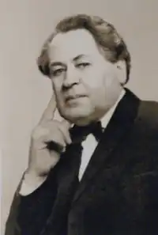
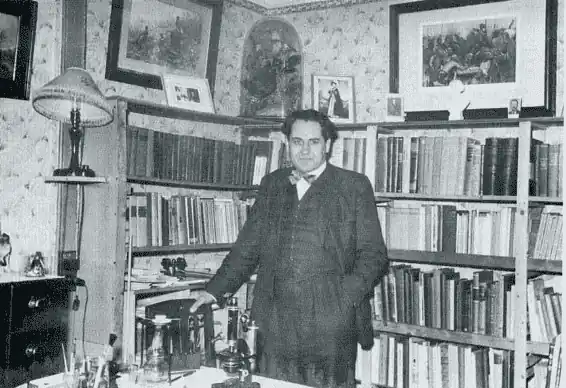

Народився 10 жовтня 1913 року в Одесі в родині звільненого в запас армії старшого унтер-офіцера Івана Захаровича Воропаєва та його дружини Олени Остапівни. Батько був з селян Петропавловської волості Самарської губернії та повіту (історичний Жовтий клин).
1917 року батько емігрував, родина за радянських часів перебувала у списку "неблагонадійних". Мати з чотирма дітьми переїжджає до свого села Надлук.
1933 року закінчує сільськогосподарський технікум, працював агрономом на Вінниччині. Студіював агрономію в Уманському сільськогосподарському інституті, проте його виключили з цього закладу на першому курсі. 1937 року починає збирати етнографічні та фольклорні матеріали. Закінчив Московську аграрну академію (1938). 1940—1941 рр. навчався на філологічному факультеті Одеського університету. З 1944 року в еміграції разом з дружиною Бондаренко. Перебували у таборах для переміщених осіб Авґсбурґа та Гальденбурга. 1944 року опубліковано його перші статті — в українських журналах "Дозвілля" та "Український вісник". 1946 року подружжя поступає до Українського вільного університету. 1948 роком родина виїздить до Великої Британії, Олексій працював робітником на текстильній фабриці міста Олдем. З 1949 року проживають в Лондоні. Працював у бібліотеці Британського музею у Лондоні. 1957 року здобув звання доктора Слов'янської Етнології. Входив до складу редакційної колегії журналу "Українська Думка". З 1960 року почав друкуватися в журналі "Визвольний шлях". 1961 року захистив дисертацію на звання доктора природничих наук. Згодом працював старшим науковим співробітником слов'янського відділу Науково-технічної бібліотеки Великої Британії на Півночі Англії. Наукову роботу продовжував і після виходу на пенсію. Помер 1989 року в Лондоні.